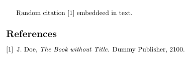
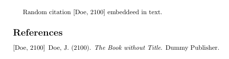

We have looked at many features of LaTeX so far and learned that many things are automated by LaTeX There are functions to add a table of contents, lists of tables and figures and also several packages that allow us to generate a bibliography. I will describe how to use bibtex and biblatex (both external programs) to create the bibliography. At first we have to create a .bib file, which contains our bibliographic information. first:
A .bib file will contain the bibliographic information of our document. I will only give a simple example, since there are many tools to generate the entries automatically. I will not explain the structure of the file itself, since i suggest using a bibtex generator (choose one from google). Our example will contain a single book and look like this:
@BOOK{DUMMY:1,
AUTHOR="John Doe",
TITLE="The Book without Title",
PUBLISHER="Dummy Publisher",
YEAR="2100",
}
After creating the bibtex file, we have to tell LaTeX where to find our bibliographic database. For BibTeX this is not much different from printing the table of contents. We just need the commands \bibliography which tells LaTeX the location of our .bib file and \bibliographystyle which selects one of various bibliographic styles.
\documentclass{article}
\begin{document}
Random citation \cite{DUMMY:1} embeddeed in text.
\newpage
\bibliography{lesson7a1}
\bibliographystyle{ieeetr}
\end{document}
By using this code, we will obtain something like this:
I named my .bib file lesson7a1.bib, note that I did not enter the .bib extension. For the style, I've choosen the ieeetr style, which is very common for my subject, but there are many more styles available. Which will change the way our references look like. The ieeetr style will mark citations with successive numbers such as [1] in this example. If I choose the style to apalike instead, i will get the following result:
If you use a different editor, it can be necessary to execute the bibtex command manually. In a command prompt/shell simply run:
pdflatex lesson7a1.tex
bibtex lesson7a1
pdflatex lesson7a1.tex
pdflatex lesson7a1.tex
It is necessary to execute the pdflatex command, before the bibtex command, to tell bibtex what literature we cited in our paper. Afterwards the .bib file will be translated into the proper output for out references section. The next two steps merge the reference section with our LaTeX document and then assign successive numbers in the last step.
The abilities of BibTeX are limited to basic styles as depicted in the examples shown above. Sometimes it is necessary to cite all literature in footnotes and maintaining all of them by hand can be a frustrating task. At this point BibLaTeX kicks in and does the work for us. The syntax varies a bit from the first document. We now have to include the biblatex package and use the \autocite and \printbibliography command. It is crucial to move the \bibliography{lesson7a1} statement to the preamble of our document:
\documentclass{article}
\usepackage[backend=bibtex,style=verbose-trad2]{biblatex}
\bibliography{lesson7a1}
\begin{document}
Random citation \autocite[1]{DUMMY:1} embeddeed in text.
\newpage
\printbibliography
\end{document}
The \autocite command generates the footnotes and we can enter a page number in the brackets \autocite[1]{DUMMY:1} will generate a footnote like this:
For BibLaTeX we have to choose the citation style on package inclusion with \usepackage[backend=bibtex,style=verbose-trad2] {biblatex} the backend=bibtex part makes sure to use BibTeX instead of Biber as our backend, since Biber fails to work in some editors like TeXworks. It took me a while to figure out how to generate footnotes automatically, because the sources I found on the internet, didn't mention this at all.